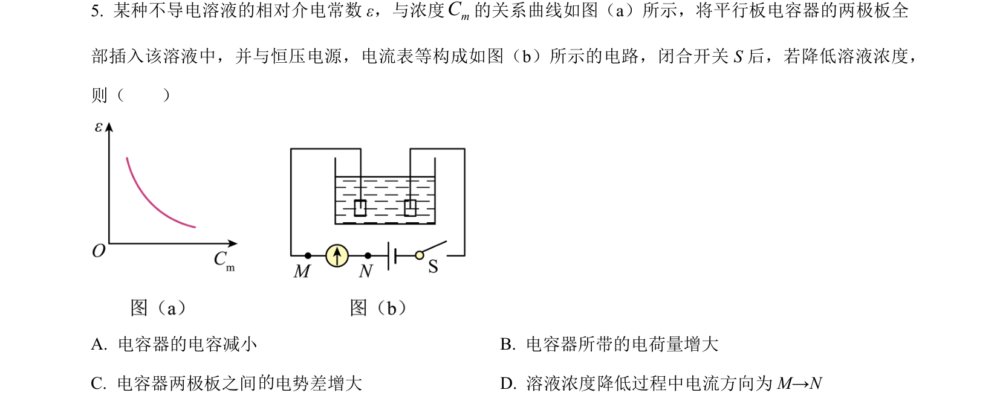
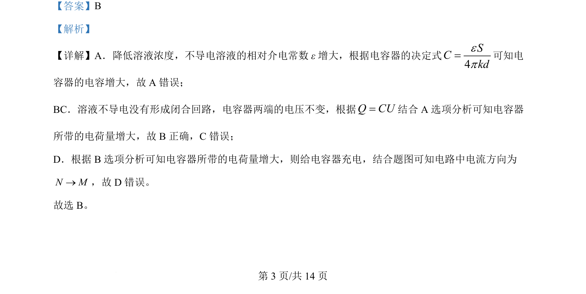

2024-辽宁-05
考点：电容器 电容决定式 充放电 电路电流方向
题面

摘要
本题通过溶液浓度变化分析电容器电容及充放电过程。
关联考点
答案与解析


📄 原 PDF 第 3 页：
素材/真题/吉林/2008-2024·（吉林）物理高考真题/2024年高考物理试卷（辽宁）（解析卷）.pdf
题干文本
- 某种不导电溶液的相对介电常数 ε，与浓度mC的关系曲线如图（a）所示，将平行板电容器的两极板全 部插入该溶液中，并与恒压电源，电流表等构成如图（ b）所示的电路，闭合开关 S 后，若降低溶液浓度， 则（ ） A. 电容器的电容减小 B. 电容器所带的电荷量增大 C. 电容器两极板之间 电势差增大 D. 溶液浓度降低过程中电流方向为 M→N
解析文本
【答案】B 【解析】 【详解】A．降低溶液浓度，不导电溶液的相对介电常数 ε增大，根据电容器的决定式 4SCkdep=可知电 容器的电容增大，故 A 错误； BC．溶液不导电没有形成闭合回路，电容器两端的电压不变，根据Q CU=结合 A 选项分析可知电容器 所带的电荷量增大，故 B正确，C错误； D．根据 B选项分析可知电容器所带的电荷量增大，则给电容器充电，结合题图可知电路中电流方向为 N M®，故 D 错误。 故选 B。 的 的